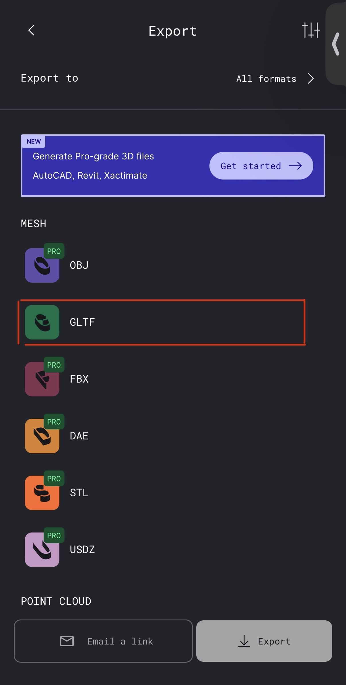

How to Capture & Upload
1. Setup Polycam
Use the Polycam app to scan an indoor scene. Go to Settings -> Developer Mode and turn Developer Mode on.
2. Scan
Capture data in Space mode. This would use the lidar sensor.
3. Process
After scanning, tap Process to process the data in the Polycam app.
4. Export
Click the download icon in the top right corner.
5. Extract GLTF file
Select GLTF to export to a .glb file. Upload this file.
6. Extract raw data
Select raw data to export a .zip file. Upload this file as well.